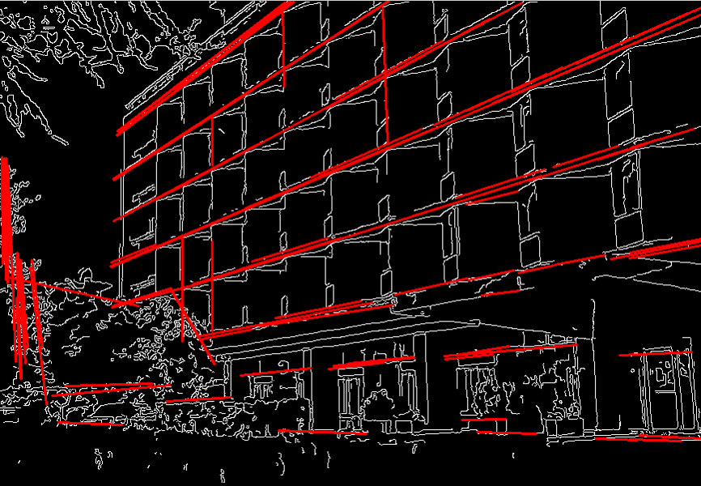

霍夫线变换检测直线
霍夫线变换


- 霍夫线变换是用于检测直线的变换。
- 为了应用变换，首先需要边缘检测预处理。
原理
- 两种坐标：
- 笛卡尔坐标系 —— 𝑦 = 𝑘𝑥 + 𝑞
- 霍夫空间 —— 𝑞 = −𝑥𝑘 + 𝑦
-
笛卡尔坐标系中一条直线，对应霍夫空间中的一个点

-
笛卡尔坐标系中的一个点，对应霍夫空间中一条直线

- 基于以上两点，如果给与几个点，它们换算成霍夫方程后如果存在共同的交叉点，则这几个点是共直线。
例子
#include <opencv2/opencv.hpp>
using namespace cv;
using namespace std;
int main()
{
Mat src = imread("Sudoku.jpg",0);
imshow("src", src);
Mat mid, dst;
dst.create(src.size(),CV_8U);
Canny(src, mid, 100, 100, 3);
vector<Vec4i> lines;
HoughLinesP(mid, lines, 1, CV_PI/180, 50, 50, 10);
//画出每条线段
for (int i = 0; i<lines.size(); i++)
{
Vec4i line = lines[i];
line(dst, Point(line[0],line[1]), Point(line[2],line[3]), Scalar(255));
}
imshow("mid", mid);
imshow("dst", dst);
waitKey();
return 0;
}